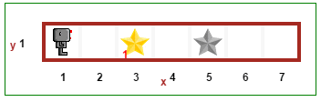

Warning
This document is in the middle of a major revision. Some sections might be missing text, or have French text as placeholder.
和乐跑一起学 Python 很简单。你所要做的就是一边读本教程，一边在 乐跑的世界 里运行所有的例程。建议你分别在浏览器的不同窗口或标签页打开本教程和乐跑的世界。
在你正式开始阅读本教程之前，让我们通过在 乐跑的世界 里运行一个程序来开始乐跑第一步吧。
“Hint（提示）”是可以点击展开的。当你不知道要怎么继续下去的时候，这里会提供指南。
Hint
在 乐跑的世界 里点击“run（运行）”按钮（蓝色背景的白色小三角）并且观察乐跑走出它的第一步。你也可以通过观看 一个短视频 来了解这个过程……尽管版本稍微旧了点。如果愿意，你可以使用全屏来观看高清版。

美国加利福尼亚州的学生在玩乐跑的世界。
乐跑的世界就是为你而设计的！
我在创造乐跑的世界的时候，脑袋里想的是要通过创造一个友好的环境，来学习编程的一些概念。虽然使用“通常的”网络编程语言—— JavaScript 来实现乐跑也是可以的，但是我决定专注于 Python —— 这个用途十分广泛、萌新和老司机都容易上手的语言。
本教程首先是写给你，帮助你学习计算机编程的。然后，这里面也有一些写给教师和其他乐跑的世界用户的内容。你可以放心地忽略这部分内容，不用担心错过重要的、有关编程概念的信息。
本文档分为九个主要章节。
如果点击上面任何一个标题，你就会跳转到相应的页面。那里面还有一个更详细的相应章节的目录。
写给教育者的内容

韩国三星出版的两本书（红色的是教师版，蓝色的是学生版），内容基于 RUR-PLE（RUR Python 学习环境）——乐跑的世界的前身。
乐跑的世界的灵感受到了 Richard Pattis 的 机器人查尔斯（Karel the robot） 的启发。里面的虚拟机器人，可以用三种编程语言（Python、JavaScript 和 CoffeeScript）来控制。不过，本教程专注于 Python ——我最喜欢的编程语言，也是公认用于传授编程概念给初学者的理想语言。
在本教程里，我把对变量的介绍尽可能的延后了。函数的参数也是如此。这种方法反映了在 Pattis 原版的查尔斯（Karel）里，根本没有任何变量。就像本教程的前两个章节—— 基础教程 和 递归 。
乐跑的世界的创造目标是：在尽可能的简化 Pattis 的理念的同时传授非常高阶的编程概念。所以没有像别的、给纯粹的初学者看的教程那样，从“简单的” 第一个程序 开始：
public class HelloWorld {
public static void main(String[] args) {
System.out.println("Hello, World");
}
}
在乐跑的世界，最简单、完整的程序是这样的：
move()
就这么简单：只有一个指令。还有比这更简单的、教给初学者的东西么？
当然，并不局限于简单的函数。例如，我们想使用面向对象的方法来代替最简单、完整的程序。那么，等价于上面单一的 move() 指令，我们真正要乐跑做的是：
reeborg = UsedRobot()
reeborg.move()
同样的，因为标准库很有用，我们可以首先让学生通过写代码来学习使用各种库。这样他们会认识到，各种库模块和其它程序也没啥区别。假设他们在自己的库里定义了一个叫 turn_right() 的函数，那么下面这段代码是合理的：
from library import turn_right
turn_right()
本教程的理念是：让学生使用尽可能少的概念来编程；只有在打完基础后，才开始学习新概念（比如变量、面向对象的表示法，或者从库中导入代码等等）。写本教程的指导原则是：每次只介绍一个编程概念。
然而，使用简单的方法，不意味着乐跑的世界就限制在了基本的虚拟机器人的世界里。Python 版本的乐跑的世界基于 Brython 并且包含了很多 Python 标准库里的模块，完全可以用来写高阶的程序。
任务驱动型学习
乐跑的世界被设计为 任务驱动型学习 ：学生收到一个乐跑必须完成的任务，然后他们要通过写程序指示乐跑该如何完成。
这些任务包括让乐跑移动物体、砌墙，或者去一个指定的地点等等。乐跑的世界里的物体很丰富；乐跑要到达的目的地会用一个在灰色阴影里的物体图片来表示。
如果你能分享一些对你的学生很有帮助的例程（乐跑的任务）来改进本教程，我将十分感谢。
自由
乐跑的世界是 自由 的： 自由 使用、自由 复制（放在学校的网站上），并且不需要任何注册或登陆。不同于其它的学习编程的网站，乐跑的世界不勉强学员遵从预设的路线；教育者可以 自由 的使用乐跑的世界来创建自己的教学材料。